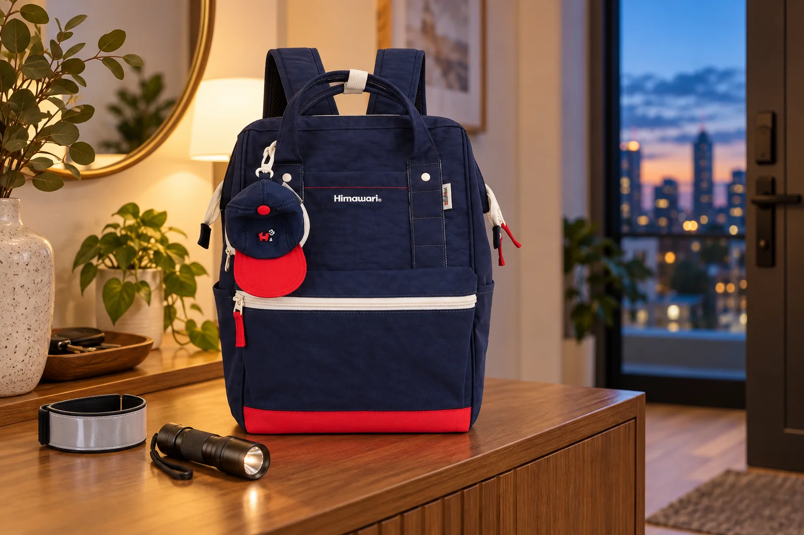

해 질 무렵의 산책, 가방 밖에서 확인할 것

낮에 집을 나선 산책도 돌아오는 시간에 따라 준비가 달라집니다. 집을 향해 걷는 구간에서 주변이 어두워지고 손에는 휴대전화나 우산이 더해질 수 있습니다. 백팩을 처음 멘 순간의 상태만 보면 귀가할 때의 동작이 빠집니다. 걸을 경로와 돌아올 시간, 중간에 꺼낼 물건을 함께 생각해볼 만합니다. 가방 색이 눈에 띈다는 이유만으로 저녁 보행의 조건을 해결했다고 판단하기보다는 필요한 준비를 따로 확인하는 것이 좋습니다.
산책 계획에서는 출발 구간보다 돌아오는 구간을 먼저 살펴볼 수 있습니다. 역이나 정류장에서 집까지 어떤 길을 걸을지, 다른 장소에 들렀다가 돌아올지 정합니다. 현장에서 이용 가능한 길과 안내를 확인하고 밝기나 날씨가 달라지면 경로를 조정할 수 있게 생각해둡니다. 정확한 길이 확정되지 않았다면 지도와 연락 도구를 어디서 확인할지 준비하세요. 걸으면서 계속 화면을 찾는 방식보다 멈춰 확인할 자리가 포함된 이동이 관리하기 쉽습니다.
별도로 준비한 소품의 위치
반사 밴드나 걸이형 소품을 사용할 생각이라면 해당 물건의 용도와 부착 방법을 읽어봅니다. 어디에 달 수 있는지 안내를 확인한 뒤 실제 입을 옷과 백팩을 함께 착용해봅니다. 옷 위에서는 보였던 소품이 가방을 멘 뒤 가려질 수 있고, 가방을 벗어 손에 들면 위치가 달라질 수도 있습니다. 거울이나 동행자의 도움으로 앞뒤 모습을 살펴볼 수 있지만, 이것을 전문 성능 측정처럼 생각할 필요는 없습니다.
소품을 가방끈이나 여밈에 임의로 매달기 전에 안내된 연결 방식과 실제 부위를 확인합니다. 걸을 때 크게 흔들리거나 지퍼를 열 때 같이 움직인다면 일상 동작에 방해가 되는지 봅니다. 고정한 위치가 물건을 꺼낼 때 손에 가려지는지도 확인할 수 있습니다. 별도 장비의 성능은 그 제품의 정보를 기준으로 판단해야 하며 가방의 장식이나 밝은 색을 동일한 기능으로 보지는 않습니다.
Himawari No.9007 제품 정보는 산책에 사용할 개인 가방을 검토할 때 참고할 수 있습니다. 반사 밴드와 손전등이 필요하다면 별도로 준비하고 각각의 사용 안내를 확인합니다. 가방은 연락 도구와 필요한 소지품을 담는 자리로 생각하고, 별도 소품을 쓸 경우에는 실제 착용 상태에서 서로 가려지는 부분과 여닫는 동작을 확인하면 됩니다.

소품을 단 상태에서 겉옷을 새로 입을 계획이라면 그 조건도 미리 생각합니다. 산책 중 옷을 덧입었을 때 가려지는 위치가 생길 수 있으므로, 옷을 바꾼 뒤 다시 살펴보세요. 우산을 사용할 경우에는 손에 들 물건의 개수와 가방을 열 수 있는 순간도 달라집니다. 필요 없는 장식을 추가해 관리할 것을 늘리기보다 실제로 준비한 소품이 안내된 방법으로 사용되고 있는지 확인하는 데 초점을 두면 됩니다.
멈춘 뒤 찾을 수 있는 소지품
휴대전화와 교통카드는 위치를 기억할 수 있는 닫힌 곳에 둡니다. 빠르게 꺼내기 위해 가방 밖에 그대로 드러내둘 필요는 없습니다. 길을 확인하거나 연락할 때는 주변 흐름을 방해하지 않는 자리에 멈춘 다음 필요한 물건만 꺼낼 수 있게 준비하세요. 두 물건을 함께 놓는다면 하나를 찾으면서 다른 것이 따라 나오지 않는지도 봅니다. 꺼낸 뒤 돌아갈 위치가 일정하면 산책 중 여러 번 가방 전체를 열지 않아도 됩니다.
출발 전에 실제로 가방을 열고 휴대전화를 꺼내보는 과정이 도움이 됩니다. 한 손에 우산을 든 조건을 생각한다면 어떤 물건을 잠시 내려놓아야 하는지도 알 수 있습니다. 손에 짐을 들고 등을 향해 손을 뻗는 동작이 불편하면 백팩을 앞으로 가져와 여는 방식으로 바꿔볼 수 있습니다. 이 준비는 특정 제품의 편의성을 검증하는 시험이 아니라 자신의 소지품을 어떤 순서로 다룰지 정하는 과정입니다.
가방끈이 길게 늘어져 있거나 별도 장식이 흔들리는지도 실제 짐을 담은 상태에서 봅니다. 제품에 조절할 수 있는 부위가 있다면 해당 안내를 따르고, 임의로 끈을 묶어 구조를 바꾸기 전에 허용된 사용 방법을 확인합니다. 걸을 때의 흔들림과 계단에서 물건을 찾는 동작은 서로 다른 상황이므로 따로 살펴볼 수 있습니다. 이동 중 가방을 열었다면 다시 닫은 뒤 걸음을 이어가면 됩니다.
돌아온 뒤 남길 준비
낮에는 필요하지 않았던 물건을 산책 중에 꺼냈다면 귀가할 때 개수를 확인합니다. 별도 소품을 옷에서 떼어 손에 들었다면 백팩과 함께 가져갈 짐으로 포함합니다. 짧은 휴식 중 가방을 내려놓았다면 그 자리에 남은 물건이 없는지도 봅니다. 귀가 경로가 바뀌었을 때 필요한 연락이나 이동 안내를 확인하되 길 위에서 여러 물건을 동시에 정리하기보다 멈출 수 있는 장소에서 하나씩 다루면 됩니다.
집에 도착하면 젖은 우산이나 옷을 먼저 분리합니다. 백팩에 임시로 넣은 물건이 있다면 물기를 확인하고 제품 관리 표시에 맞게 정리하세요. 반사 소품은 사용 안내에 따라 상태를 확인하고 다음에도 챙길 위치를 정할 수 있습니다. 사용하지 않는 날에는 다른 소지품의 끈과 엉키지 않게 따로 보관합니다. 매일 가방에 달아둘 것인지 산책할 때만 챙길 것인지는 실제 생활 방식에 맞춰 판단하면 됩니다.
다음 산책을 준비할 때는 어느 구간에서 물건을 꺼냈는지 떠올려봅니다. 정류장에서 교통카드를 찾기 어려웠다면 그 위치를 바꾸고, 겉옷 때문에 소품이 가려졌다면 실제 착용 조합을 다시 확인할 수 있습니다. 귀가 시간이나 날씨가 달라지면 이전 준비를 그대로 적용하지 않습니다. 백팩의 자리를 정리하는 일과 필요한 별도 소품을 안내에 맞게 사용하는 일을 함께 생각하면 그날의 이동 조건에 맞추어 바꿀 부분이 구체적으로 보입니다.